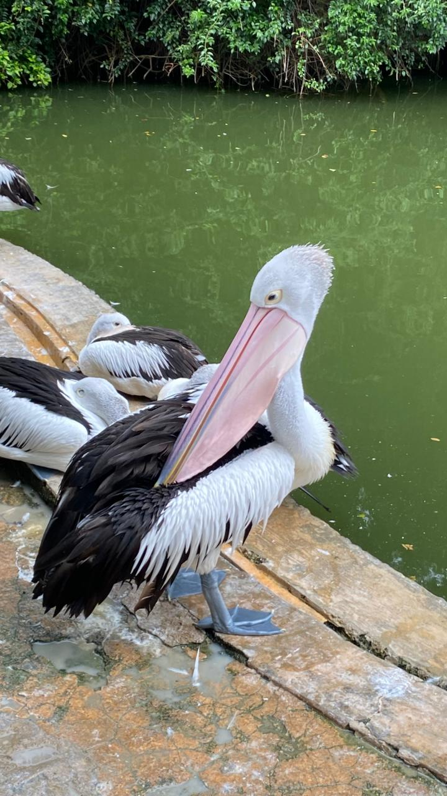

Pelican

- Scientific Name: Pelecanus onocrotalus
- Habitat: Shallow lakes, marshes, and deltas across Africa, Europe, and Asia.
- Fun Fact: Pelicans have a massive throat pouch called a "gular pouch" that can hold up to 11 liters of water—it’s not for storing food for long, but mainly used as a "dip net" to scoop up fish.
- Conservation Status: Least Concern (Population stable)
← Back to Animal List